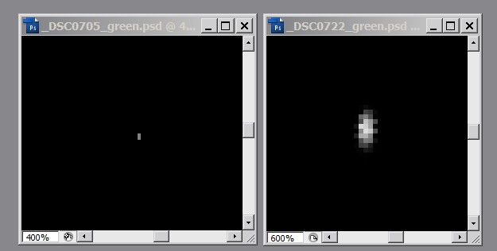
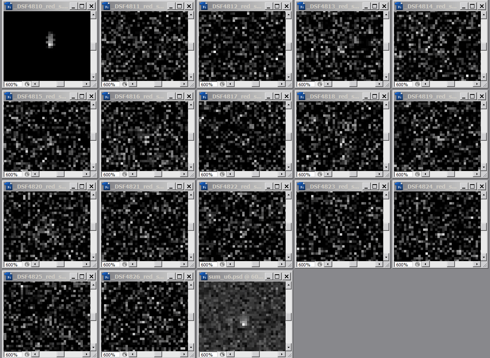
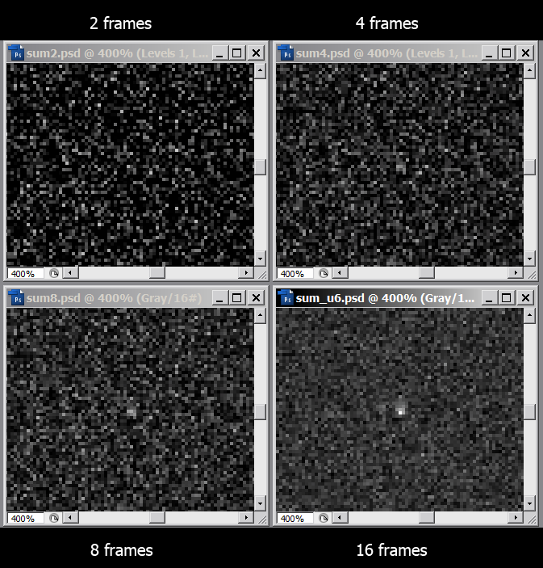
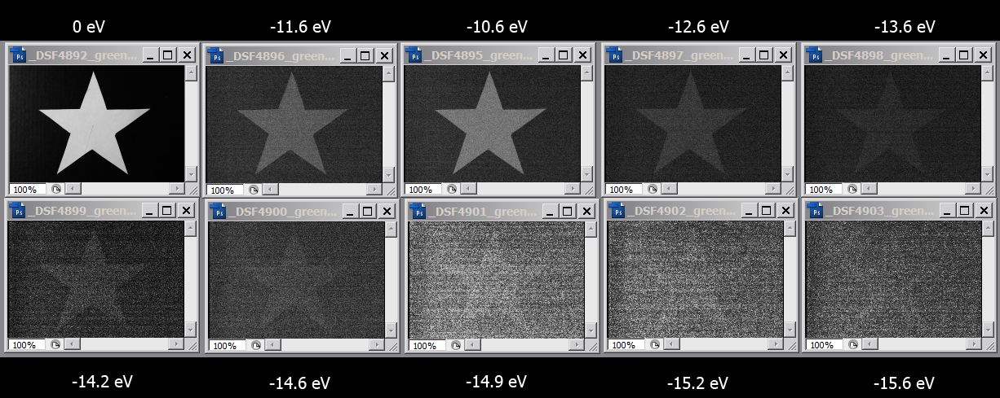
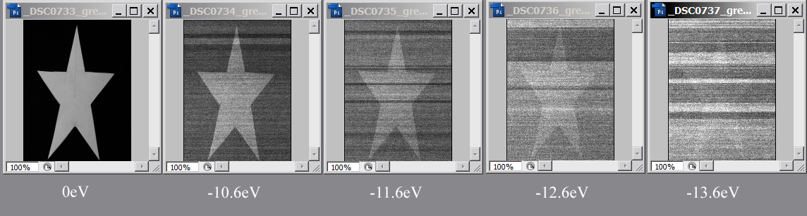
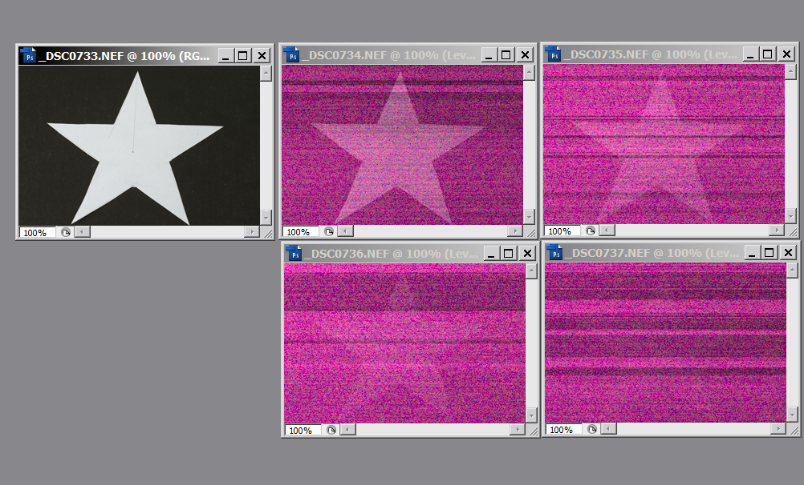

Под песком
о шуме, динамическом диапазоне и фотографических экспериментах не имеющих отношения к фотографии
Согласно [1], [2], [3] уровень шума N-разрядного АЦП составляет
SNR = 6.02N + 1.76 dB. (1)
Причем в работе [2] прямо указывается, что:
For an N-bit ADC, the dynamic range (DR) can be calculated as:
DR = 6.021N + 1.763 dB
то есть динамический диапазон АЦП выше, чем отношения максимально возможной измеряемой величины сигнала к величине, соотвествующей младшему значащему разряду или 2N стопов. При этом предполагается, что уровень шума самого сигнала ниже младшего значащего разряда.
В работе [3] дается вывод этой формулы.
Эксперимeнт 1
Мы будем эмулировть 8-битный АПЦ путем обнуления младших разрядов значений записаных в RAW. Расчетное значения для динамического диапазона согласно формуле (1) составляет 8.29 стопа. Ниже приведены две фотографии, малоразмерного объекта - оранжевого светодиода диаметром 1.5 мм находящегося в темной комнате сфотографированного с расстояния примерно 1.5 м при помощи 70 мм объектива.
Фотографии содержат данные красного канала RAW в которых младшие 4 бита из 12 обнулены, сняты со следующими параметрами экспозиции:
_DSC0705.NEF - 1/15 sec, f/22.0
_DSC0722.NEF - 1/1.3 sec, f/4.5
при помощи фотоаппарата Nikon D70, ISO 200. Нетрудно рассчитать, что экспозиция отличается на 8.1 стопа.

Левый кадр усилен в 128 раз, что бы было хорошо видно; и так имеем сигнал на левом кадре и нет пересвета на правом.
Таким образом при помощие 8-битного фотоаппарата загегистрирован динамический диапазон в 8.1 стопа.
Обсуждение:
критика состоит в том, что файл был разложен на поканальны файлы при помощи программы dcraw_parser написанной на базе dcraw, код которого труден в понимании и проверке на наличие ошибок. Поэтому последующие эксперименты будут проводится при помощи камеры Fuji S5Pro. Она имеет очень простой формат RAW файла - это массив 16-битных двухбайтных слов в которых младшие 14 бит содержат данные полученные с АЦП, старшие 2 бита обнулены. По смещению 100 от начала файла хранится 4-байтная величина смещения начала массива от начала файла. Формат байт - Little-endian (IBM). Таким образом программа для анализа файлов может быть легко написана любым исследователем владеющим каким-либо языком програмирования. В нашем случае использовалась программа RafS3ProSplitter
Кроме того для осллабления сигнала использовался нейтральный B+W 110 ND 3.0 фильтр с коеффициентом поглощения равным 10 стопам. Перед использованием фильтр был калиброван и было установлено, что его коеффициенты пропускания равны:
красный 10.3 стопа
зеленый 10.6 стопа
синий 10.9 стопа
Эксперимeнт 2
Как указано в работе [1]:
"Для того чтобы выиграть дополнительное «разрешение» для большего числа значащих битов, необходимо выполнять усреднение с арифметической точностью."
На серии фотографий изображен красный канал снимков того же светодиода, первый кадр сделан без фильтра, остальные с 10х фильтром, эти изображения усилены в 1024 раза.. Экспозиционные параметры одинаквые: 1/25 sec, F/4, ISO 160.

Последний кадр - это результат арифметического сложения кадров сделанных с фильтром, полученный при помощи специально написанной программы сумматора. В результате этого сложения сигнал становится наблюдаемым на фоне шума.
Сложение меньшего числа файлов дает следующий результат:

Обсуждение:
выделение сигнала на фоне шума требует сложения большого числа кадров. Для более слабых сигналов потребуется слишком много кадров и такой эксперимент становится слишком трудоёмким. В качестве альтернативы можно суммировать не пиксели нескольких кадров, а пиксели одного кадра. Таким образом мы можем увеличить динамический диапазом ценой разрешения. Это не позволит детектировать малоразмерные объекты, но для объектов размером близким к размеру кадра эффект должен наблюдатся.
Эксперимeнт 3
Сделана серия кадров, первый без фильтра, последующие с филтром 10х и разными экспопараметрами:
ISO 125
| _DSF4892.RAF | 25/10 | F/4 | без фильтра |
| _DSF4895.RAF | 25/10 | F/4 |
| _DSF4896.RAF | 13/10 | F/4 |
| _DSF4897.RAF | 10/16 | F/4 |
| _DSF4898.RAF | 10/30 | F/4 |
| _DSF4899.RAF | 10/50 | F/4 |
| _DSF4900.RAF | 10/60 | F/4 |
| _DSF4901.RAF | 10/80 | F/4 |
| _DSF4902.RAF | 10/100 | F/4 |
| _DSF4903.RAF | 10/130 | F/4 |
Кадры были уменьшены в 10 раз по стороне при помощи специальной програмы вычисляющей значение пикселя по сумме 100 (10х10) пикселей исходного изображения. Полученные кадры усилены для лучшей визуализации

Аналогичный эксперимент был проведен с Nikon D70 имеющей 12-битный АЦП

Обработка и уменьшение также возможно и в графическом редакторе (Фотошоп и ACR), но дает меньше контроля за результатами:
Внимание: уровень черного в ACR должен быть установлен в 0 обязательно!

Обсуждение:
Показано, что разрядность АЦП не является пределом для достижимого динамического диапазона и что путем увеличения времени измерения или потерей разрешения динамический диапазон может быть расширен, как и указывается в цитируемой литературе.
Литература:
- 1.ADC Input Noise: The Good, The Bad, and The Ugly. Is No Noise Good Noise? PDF, перевод Входной шум АЦП: хороший, плохой и опасный. Хорошо ли, когда его нет? PDF
-
- 2.Oversampled ADC and PGA Combine to Provide 127-dB Dynamic Range PDF
-
- 3.Лекция №3 "Аналого-цифровое и цифро-аналоговое преобразование" PDF
-
All contents
copyright © vgrin, first published April 28, 2012. Ver 3.01, January 20, 2015